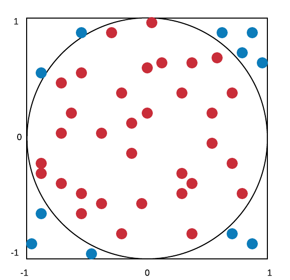
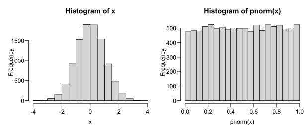
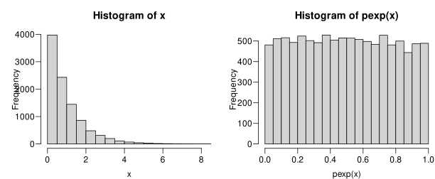
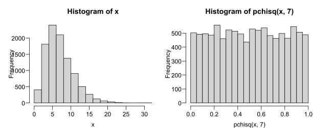
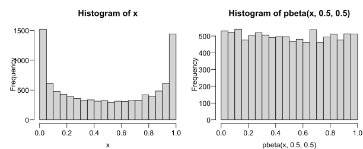

Monte Carlo (MC) is a class of simulation-based methods for computation, with wide applications in math/science
Stanisław Ulam (who worked at both UW-Madison & the Manhattan Project) first applied MC to computing the probability a random game of solitaire is solvable
Origin of name: supposedly named after his uncle’s favorite casino
Very flexible approximate method, can do many things, e.g:
find probabilities
compute expectations
estimate parameters
test hypotheses,
etc…
MC probability estimates
Let \(E\) be some event for an RV \(X\). Suppose we want to estimate \(\p E\)
Define the indicator function\(\i E\) where \[
\i E(x)=\begin{cases}1&\text{if $x\in E$}\\0&\text{if $x\notin E$}\end{cases}
\] Let \(X_1,...,X_n\) be iid from same distribution as \(X\), and let \(Y_i=\i E(X_i)\), what RV is \(Y_i\)?
Ans: \(Y_i\sim\bern{p=\p E}\), so that \(\e{Y_i}=p=\p E\),
Also by LLN, as sample size grows, we’ll have \(\bar Y\to\e{Y_i}=\p E\)
In other words, to approximately find probability of event \(E\), we just need to:
Run experiment \(X\) a large number of repetitions,
Count how many times \(E\) occurs,
Divide by number of repetitions.
Example 1: normal draws
As an easy first example, let \(X\sim\norm{0,1^2}\), and let \(E=(-2,2)\), use MC to evaluate \(\p E\)
# set MC repetitions sizeM =1e6# draw n samplesX =rnorm(M, mean=0, sd=1)# count how many in EE =sum(-2<X & X<2)# divide by n to get P(E)E/M
[1] 0.954342
# compare with theoretical valuepnorm(2, mean=0, sd=1) -pnorm(-2, mean=0, sd=1)
[1] 0.9544997
Example 2: birthday problem
Suppose birthdays are evenly distributed throughout year (and ignore leap years). In a group of 23 people with independent birthdays, what’s the probability at least 2 people have the same birthday?
# sample 23 days from 1-365 with replacement(bdays =sample(365, size=23, replace=TRUE))
# check if more than 1 person has same birthdaymax(table(bdays)) >1
[1] TRUE
# loop above using for()M =1e5 ; count =0for(i in1:M){if(max(table(sample(365,23,TRUE)))>1){ count = count+1 }}count / M
[1] 0.50253
# alternative way using replicate()mean(replicate(M, max(table(sample(365,23,TRUE)))>1 ))
[1] 0.50902
Example 2: birthday problem (cont.)
This problem is exactly solvable. For \(n\) people, \(1\le n\le365\), probability all \(n\) people have distinct birthdays is: \[
1\cdot\frac{364}{365}\cdot\frac{363}{365}\cdots\frac{365-n+1}{365}=\frac{365!}{(365-n)!\,365^n}
\] Subtracting this from 1 gives the probability at least 2 people share a birthday. We can define and plot this function in R:
# vectorized bday functionbday =Vectorize( \(n) 1-prod(365:(365-n+1)/365))tibble(n=1:50, prob=bday(n)) %>%ggplot(aes(n,prob)) +geom_line() +scale_y_continuous(breaks=0:5/5) +ggtitle("Chance of shared birthday in n people")
If the simulation result is related to some unknown parameter, this can be used to derive an estimator of the parameter.
Example: Consider the length-2 square \(S\) with corners at \((\pm1,\pm1)\) and its inscribed circle \(C\) with center \((0,0)\) and radius 1.

Note a point uniformly sampled over \(S\) has \(\pi/4\) probability of landing in the circle.
Let \((X_i,Y_i)\) be a point uniformly sampled over \(S\), and let \(Z_i=\i C(X_i,Y_i)\) where \[
\i C(x,y)=\begin{cases}
1&\text{if $x^2+y^2\le1$}\\
0&\text{if $x^2+y^2>1$}
\end{cases}
\] be the indicator function for if the point is in \(C\). Note \(Z_i\sim\bern{\pi/4}\)
Thus, we have the following estimator \(\hat\pi=4\bar Z\), and we know for iid sample of size \(n\): \[\e{\hat\pi}=4\e{\bar Z}=\pi\qquad\v{\hat\pi}=4^2\v{\bar Z}=\frac{16}n\left(\frac\pi4\right)\left(1\!-\!\frac\pi4\right)=\frac{\pi(4-\pi)}n\]
\(\hat\pi\) example in R
# set sample sizen =1e6# simulate X, Y points uniformly over squareX =runif(n, min=-1, max=1)Y =runif(n, min=-1, max=1)# how many points also inside circle?C =sum(X^2+ Y^2<=1)# produce estimate(est =4* C / n)
[1] 3.140784
# percent error(est-pi)/pi*100
[1] -0.02574024
Validating estimator performance
We saw previously \(\e{\hat\pi}=\pi\) and \(\v{\hat\pi}=\pi(4-\pi)/n\), do these hold?
Pick \(n=1000\), i.e. \(1000\) points will be used to produce each estimate, and repeat the process to get \(M=100\) different MC estimates, then check their mean/var:
# use replicate() to get estimates(est =replicate(100,4*mean(runif(1e3,-1)^2+runif(1e3,-1)^2<1)))
# mean clearly agrees with theory, how about var?pi*(4-pi)/1000
[1] 0.002696766
Simulating RVs with arbitrary PDFs
So far, we’ve only learned how to use built-in r...() functions or sample() to simulate variables, but can we simulate from arbitrary PDF? Yes, using the following fact:
For any continuous RV \(X\) with CDF \(F_X\), we have \[
F_X(X)\sim\unif{0,1}
\] Note it’s \(F_X(X)\) not \(F_X(x)\), i.e. the CDF is applied to an observation drawn from \(X\).
Put another way: percentiles of continuous RV draws are uniform. Demo:
# start with normx =rnorm(1e4)hist(x)hist(pnorm(x))

# now try expx =rexp(1e4)hist(x)hist(pexp(x))

# some other distsx =rchisq(1e4,7)hist(x)hist(pchisq(x,7))

# some other distsx =rbeta(1e4,.5,.5)hist(x)hist(pbeta(x,.5,.5))

\(F_X(X)\) uniformity
Quick proof of this fact. Let \(Y=F_X(X)\), i.e. \(Y\) is the percentile of a draw from \(X\).
Consider the CDF of \(Y\), \(F_Y(y)\). By definition:
\[
F_Y(y)=\p{Y\le y}=\p{F_X(X)\le y}
\]
By monotonicity of CDFs, \(F_X(X)\le y\) implies \(F_X^{-1}(F_X(X))\le F_X^{-1}(y)\), so
This shows \(F_Y(y)=y\) which is uniquely the CDF of \(\unif{0,1}\).
Brian’s notes section 9.7 has a nice visual showing this for each draw
Generating from arbitrary PDFs
Since \(F_X(X)\sim\unif{0,1}\) for any continuous \(X\), it follows that \[
X\sim F^{-1}_X(\unif{0,1})
\] I.e. to simulate an \(X\) with arbitrary PDF, we can run its quantile function on \(\unif{0.1}\)
For MC, it’s important to have a good source of randomness, which is surprisingly hard
In R, random number generation is not truly random but pseudorandom
Starting with a seed value, a scrambling algorithm called Mersenne Twister is used to imitate randomness (if no seed set, system time + process ID used)